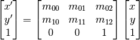
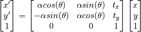
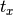
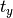

Desenvolupament a GeoTools¶
GeoTools està construït de manera que la seva funcionalitat pugui ser ampliada mitjançant plug-ins, sense haver de modificar el codi base. D’aquesta manera, es poden afegir noves implementacions de les API existents simplement afegint les noves llibreries al classpath.
GeoTools utilitza un sistema de descoberta de noves funcionalitats, anomenat SPI (Service Provider Interface), proporcionat de manera estàndard per Java.
Les API defineixen una sèrie d’interfícies. Les diferents implementacions s’instancien mitjançant factories, que es registren a l’SPI per ser descobertes en temps d’execució.
Transformació de semblança¶
Una transformació afí es defineix amb una matriu 3x3, de la següent forma:
(1)
La transformació de semblança es pot expressar com una transformació afí:
(2)
on  i  és la traslació,  la rotació, i
la rotació, i  el factor d’escala.
el factor d’escala.
Les transformacions matemàtiques s’instancien mitjançant la implementació per defecte de la interfície MathTransformFactory, anomenada DefaultMathTransformFactory. Aquesta factoria crearà una MathTransform d’un tipus o un altre en funció dels paràmetres que rebi. La creació es produeix invocant el Provider, concretament el seu mètode createMathTransform.
Per tant, l’estratègia d’implementació ha consistit, simplement, a crear un SimilarityTransformProvider que calcula els valors de la matriu per instanciar una AffineTransform2D seguint la definició matricial descrita.
Internament, doncs, GeoToools tractarà la transformació de semblança com una transformació afí a tots els efectes, encara que hagi estat creada a partir d’una definició de transformció de semblança.
Un altre objectiu del Provider és definir els noms i identificadors EPSG de que es composa aquesta transformació:
- Similarity transformation (EPSG::9621):
- Ordinate 1 of evaluation point in target CRS (EPSG::8621).
- Ordinate 2 of evaluation point in target CRS (EPSG::8622).
- Scale difference (EPSG::8611).
- Rotation angle of source coordinate reference system axes (EPSG::8614).
El descriptor de l’operació permet a MathTransformFactory deduïr quin tipus de MathTransformProvider ha d’invocar, i els descriptors de cada paràmetre permeten comprovar que els valors es troben dins dels rangs permesos.
{kind=link}
Classes rellevants per a la transformació de semblança.
Determinació i instanciació d’una transformació¶
A GeoTools, la instanciació d’una operació de coordenades s’acostuma a fer amb aquesta crida:
CRS.findMathTransform(sourceCRS, targetCRS)
Al darrera d’aquesta crida aparentment senzilla, s’engega un costós procés per determinar de forma automàtica quina és la millor de les operacions disponibles. Per aquest motiu, un cop determinada, s’emmagatzema el resultat en memòria. BufferedCoordinateOperationFactory s’encarrega de la gestió d’aquesta caché d’operacions, i, per tant, és la primera factoria a ser invocada. Si no es troba la operació, es delegarà en AuthorityBackedFactory, que conté una base de dades (de fet, una backingFactory) procedent d’una autoritat. Així, el primer pas per a la resolució de la operació es farà consultant la base de dades d’aquesta autoritat.
L’autoritat per defecte és EPSG. La consulta a la base de dades EPSG és multithread, per no representar un coll d’ampolla en entorns on s’han de resoldre consultes simultànies (per exemple, quan el codi s’executa dins un servidor web), i fa servir un gestor anomenat HSQL, lleuger, i basat en fitxer. De la consulta a la BDD s’encarreguen les classes ThreadedHsqlEpsgFactory i FactoryUsingHSQL.
S’extreuen de la Base de Dades totes les operacions disponibles entre els dos CRS donats, per ordre ascendent d’error associat (per tant, les operacions més precises s’avaluen abans). Les dades sobre les operacions es carreguen a un CoordinateOperationSet. Per estalviar recursos, les operacions matemàtiques en si només s’instanciaran el primer cop que siguin requerides. S’itera llavors sobre aquesta col·lecció, fins que s’aconsegueix instanciar una de les operacions.
Pot ser que no es pugui instanciar alguna de les primeres operacions, bé perquè GeoTools no implementa l’algorisme (com passava amb la semblança fins ara), bé perquè no disposa de les dades necessàries (pensem, per exemple, en una transformació NTv2 de la que no disposem de la malla), o bé perquè els paràmetres són erronis o incoherents a la BDD (podria passar).
És aquest iterador Iter el que intenta instanciar les operacions, fent una crida de nou a ThreadedHsqlEpsgFactory i FactoryUsingHsql. En aquesta ocasió, aquestes classes s’encarreguen d’adaptar el contingut de la BDD a les característiques finals de l’operació demanada. Per exemple, garantint cert ordre dels eixos [(lat, lon) vs. (lon, lat)], o convertint unitats.
Podria ser que no es trobés la operació directa a la Base de Dades. Llavors es procediria a buscar camins indirectes per resoldre la operació (per exemple, un camí habitual de transformació és passar de coordenades projectades a geodèsiques, a geocèntriques, fer un canvi de base utilitzant els paràmetres de la BDD, i tornar a convertir a coordenades projectades mitjançant el procés invers).
En el noste cas, la operació EPSG::5166 es troba a la base de dades EPSG, és directa, i sabem resoldre-la. Es crida a DefaultMathTransformFactory, que examinant els paràmetres, arriba al nostre nou SimilarityTransformProvider, que retorna una AffineTransform2D.
En el camí de tornada, BufferedCoordinateOperationFactory desarà el resultat a la seva caché, de manera que, quan es torni a demanar la mateixa operació en crides posteriors, no caldrà tornar a consultar la base de dades EPSG en busca dels paràmetres.
{kind=link}
Descoberta i instanciació d’una transformació matemàtica.
Transformacions de malla¶
Per fer la transformació de malla NTv2 s’ha utilitzat la llibreria jGridShift. Aquesta llibreria té dues formes d’operar amb les malles.
La primera consisteix a anar accedint al fitxer de malla cada vegada que se solicita la transformació d’una coordenada:
GridShiftFile gsf = new GridShiftFile();
RandomAccessFile raf = new RandomAccessFile("100800401.gsb","r");
gsf.loadGridShiftFile(raf);
Aquest mètode estalvia temps i memòria en la càrrega de la malla, ja que només es consulta la part del fitxer necessària en cada moment. Però una transformació d’una col·lecció important de punts implica un accés repetit a disc, el que acaba enlentint notablement les operacions de reprojecció al vol.
El segon mètode consisteix a carregar tota la malla en memòria:
GridShiftFile gsf = new GridShiftFile();
InputStream in = new URL("file:100800401.gsb").openStream();
gsf.loadGridShiftFile(in, false);
in.close();
Aquest mètode necessita tanta memòria com gran és el fitxer de malla, i la càrrega inicial és costosa en temps, havent de processar tot el fitxer.
S’ha optat doncs per una solució òptima que combina tots dos mètodes:
- Utilitza el primer mètode per comprovar la integritat del fitxer de malla tan aviat com sigui possible. Fer aquesta comprovació és ràpid, no costa memòria, i evita acabar prenent com a bo un fitxer de malla corrupte, el que derivaria en errors posteriors de transformació no recuperables. D’aquesta manera, si el fitxer no es reconeix com a correcte, simplement s’informa l’usuari amb un warning, i es descarta el seu ús, utilitzant el següent mètode de transformació disponible (vegeu com s’itera sobre un CoordinateOperationSet a Determinació i instanciació d’una transformació).
- Utilitza el segon mètode per carregar tota la malla en memòria, optimitzant el rendiment en les transformacions (pensem, per exemple, que la reprojecció al vol d’un servei WMS requereix la transformació ràpida de molts punts). La càrrega completa de la malla en memòria es retarda el més possible, només es carrega quan és realment necessari, en el moment de realitzar la primera transformació.
- Procura una gestió eficient dels recursos de memòria, mitjançant un SoftHashMap que actua com a caché dels fitxers de malla carregats. Així, un cop carregada una malla, aquesta es mantindrà en memòria per a posteriors usos, però no indefinidament. Aquesta caché assegura la permanència dels elements (malles) accedits més recentment, però en cas que el sistema necessiti memòria per a altres tasques, s’esporgaran les malles en desús. S’equilibra així l’ús de memòria amb els accessos a disc.
{kind=link}
Classes rellevants per a les transformacions de malla (NTv2 i NADCON).
Al diagrama de classes observem que s’ha creat una nova transformació matemàtica, NTv2Transform, que embolcalla la classe GridShiftFile de jGridShift i l’adapta per al seu ús com a MathTransform de GeoTools. Com la operació és invertible, aquesta classe disposa dels mecanismes necessaris per aplicar la transformació en ambdues direccions.
NTv2Transform també conté el corresponent Provider, que, tal com s’ha vist a l’apartat anterior, conté els descriptors EPSG de la transformació i els seus paràmetres, així com el mètode per a instanciar-la. En aquest cas els descriptors són:
- NTv2 (EPSG::9615):
- Latitude and longitude difference file (EPSG::8656).
Una característica d’aquest tipus de transformació és que depèn d’un recurs extern, el fitxer de malla, que ha de proporcionar l’usuari. Depenent de l’entorn d’execució (GeoTools, GeoServer, uDig, etc.), aquest recurs pot trobar-se en diferents ubicacions.
S’ha creat una interfície GridShiftLocator amb un sol mètode, locateGrid(), que, donat un nom d’un fitxer, retorna la localització (path absolut o URL) del recurs. I s’ha provist una implementació per defecte, el ClasspathGridShitfLocator, que farà una cerca del fitxer de malla a tot el classpath. Així, ubicant el .gsb al classpath, GeoTools el detectarà automàticament quan sigui necessari.
NTv2Transform té un mètode privat, també anomenat locateGrid(), que fa ús dels GridShiftLocator existents per cercar els fitxers de malla. Està previs que hi pugui haver al sistema diverses implementacions de GridShiftLocator, cadascuna amb una prioritat diferent, de manera que el mètode locateGrid() de NTv2Transform els utilitzi per ordre fins trobar el recurs. Veurem aquesta situació al Desenvolupament a GeoServer.
En tot cas, després de localitzar el recurs, NTv2Transform invocarà la classe NTv2GridShiftFactory, encarregada de comprovar la integritat del fitxer, de la seva càrrega en memòria quan sigui oportú, i de gestionar la softCache de malles descrita anteriorment.
GeoTools també incorporava una implementació de transformacions de malla en format NADCON. Aquesta funcionalitat no s’aprofitava a GeoServer perquè hi mancava una forma flexible d’indicar la localització dels fitxers de malla i de gestionar la seva càrrega en memòria.
Per tant, s’ha aprofitat l’avinentesa per crear una NADCONGridShiftFactory i adaptar la NADCONTransform existent per fer ús de GridShiftLocator, de manera anàloga a com ho fa NTv2Transform. Aquest treball amb malles NADCON ha estat realitzada per Andrea Aime, i no forma part d’aquest encàrrec, pel que no entrarem en més detalls. Valgui destacar, però, com aquesta solució ha contribuït a la millora d’altres funcionalitats a GeoTools i GeoServer.
Invocació d’una transformació de coordenades¶
En la secció anterior hem vist com s’instancia una operació matemàtica a partir de la BDD EPSG. Per a les transformacions de malla, el procés és exactament el mateix. Vegem ara com s’utilitza aquesta transformació.
El mètode habitual, un cop s’ha obtingut la MathTransform, és invocar:
int nPts = 1;
double[] srcPts = {41.769413434, 2.188547199};
double[] dstPts = new double[2];
mt.transform(srcPts, 0, dstPts, 0, nPts);
El diagrama de seqüència mostra la invocació d’una transformació NTv2 utilitzant el fitxer sped2et.gsb procedent del CNIG, i que es troba registrat a la BDD EPSG per a les transformacions entre els CRS EPSG:4230 i EPSG:4258.
{kind=link}
Seqüència d’invocació d’una transformació de coordenades.
S’observa com la transformació NTv2Transform acaba fent una crida a GridShiftFile, classe provinent de jGridShift, que és la que efectua realment la transformació.
Abans però observem que NTv2Transform no es crida directament, sinó a través de dues instàncies de ConcatenatedTransformDirect2D. Aquesta construcció, creada automàticament per GeoTools en el procés descrit en l’apartat anterior, adapta l’ordre dels eixos de coordenades, de manera que aquest particular sigui transparent per a l’usuari.
Operacions de coordenades personalitzades¶
Com hem vist, GeoTools utilitza la Base de Dades EPSG com a primera font de dades autoritativa per descobrir la millor transformació en cada cas.
En ocasions, els usuaris disposen de transformacions pròpies, més precises o més actuals que les registrades a EPSG. O, simplement, desitgen poder controlar el procés al marge del mecanisme de descoberta automàtica que utilitza GeoTools, definint i forçant l’ús d’una transformació personalitzada.
Com hem vist, GeoTools utilitza factories del tipus CoordinateOperationFactory, encarregades de construïr les operacions de coordenades. Per tal de modificar el comportament per defecte, hem introduït una nova CoordinateOperationFactoryUsingWKT amb una prioritat més alta que ThreadedEpsgHsqlFactory.
D’aquesta manera, abans de consultar la BDD EPSG, es consultarà un fitxer amb definicions personalitzades. En cas de no existir aquest fitxer, la nova factoria no s’activarà. I, en cas de trobar el fitxer però no trobar en ell una definició personalitzada per a una operació determinada, CoordinateOperationFactoryUsingWKT incorpora un mecanisme intern, getFallbackAuthorityFactory(), que delegarà en la següent CoordinateOperationFactory per ordre de prioritat. És a dir, s’utilitzarà ThreadedEpsgHsqlFactory, que accedeix a la BDD EPSG oficial, com a mecanisme de fallback.
S’ha proveït GeoTools d’aquesta nova factory, però se li ha assignat una prioritat baixa per defecte, de manera que restarà inactiva per defecte. Existeix un mecanisme senzill per registrar qualsevol factoria amb el nivell de prioritat desitjat, el que permet activar l’ús aquesta característica per codi sempre que sigui necessari.
La localització del fitxer amb les definicions personalitzades es pot indicar mitjançant una variable d’entorn de la màquina java en temps d’execució, o bé es pot indicar per codi, o bé, si no es defineix, s’entendrà que es troba en algun lloc del classpath. El fitxer amb les definicions personalitzades porta per nom, per defecte, epsg_operations.properties.
{kind=link}
Classes rellevants per a la gestió d’operacions de coordenades personalitzades.
Al diagrama de classes s’observa que CoordinateOperationFactoryUsingWKT extén DeferredAuthorityFactory que al seu torn deriva de BufferedAuthorityFactory. Aquesta herència incorpora novament funcionalitats de caché per fer una gestió òptima de l’ús de memòria. Com en altres casos, la lectura d’una operació personalitzada en WKT es retarda fins que no sigui estrictament necessària, i posteriorment es manté en memòria amb un temporitzador que monitoritza el seu ús. Si passats 15 minuts una operació no s’ha tornat a utilitzar, s’allibera la memòria, i es tornarà a construïr la operació a partir del WKT quan torni a ser requerida. Això beneficia les situacions amb molta càrrega, on es manté en memòria només allò que s’està utilitzant repetidament en un moment donat.
En realitat, CoordinateOperationFactoryUsingWKT només gestiona la localització del fitxer de definicions i els mecanismes de caché descrits. La classe que realment processa les definicions personalitzades per construïr les MathTransforms corresponents és la classe PropertyCoordinateOperationAuthorityFactory, que s’utilitza des de la classe de més alt nivell com a backing factory. D’aquesta manera, el processat de base queda desvinculat de la gestió dels recursos, donant lloc a una arquitectura més flexible.
Operacions personalitzades. Sintaxi i exemples¶
Cada línia al fitxer epsg_operations.properties descriu una operació de coordenades, consistent en un CRS origen, un CRS destí, i una transformació matemàtica amb els seus corresponents valors de paràmetres. La sintaxi general és:
<source crs code>,<target crs code>=<WKT math transform>
Les transformacions matemàtiques estan descrites en la sintaxi Well-Known Text. Els noms de paràmetres i rangs de valors vàlids es poden consultar a EPSG Geodetic Parameter Registry.
Exemples¶
Declarant una malla NTv2 personalitzada:
4230,4258=PARAM_MT["NTv2", \
PARAMETER["Latitude and longitude difference file", "100800401.gsb"]]
Transformació de semblança, operant directament entre dues projeccions UTM:
23031,25831=PARAM_MT["Similarity transformation", \
PARAMETER["Ordinate 1 of evaluation point in target CRS", -129.549], \
PARAMETER["Ordinate 2 of evaluation point in target CRS", -208.185], \
PARAMETER["Scale difference", 1.00000155], \
PARAMETER["Rotation angle of source coordinate reference system axes", 1.56504]]
Transformació geocèntrica, precedida per una conversió d’el·lipsoidals a geocèntriques, i posterior conversió de geocèntriques a el·lipsoidals. El resultat és una concatenació de tres transformacions:
4230,4258=CONCAT_MT[PARAM_MT["Ellipsoid_To_Geocentric", \
PARAMETER["dim", 2], \
PARAMETER["semi_major", 6378388.0], \
PARAMETER["semi_minor", 6356911.9461279465]], \
PARAM_MT["Position Vector transformation (geog2D domain)", \
PARAMETER["dx", -116.641], \
PARAMETER["dy", -56.931], \
PARAMETER["dz", -110.559], \
PARAMETER["ex", 0.8925078166311858], \
PARAMETER["ey", 0.9207660950870382], \
PARAMETER["ez", -0.9166407989620964], \
PARAMETER["ppm", -3.5200000000346066]], \
PARAM_MT["Geocentric_To_Ellipsoid", \
PARAMETER["dim", 2], \
PARAMETER["semi_major", 6378137.0], \
PARAMETER["semi_minor", 6356752.314140356]]
]
Cada operació pot ser descrita en una única línia, o es pot trencar en diverses línies per fer-la més llegible, afegint una barra inversa “\” al final de cada línia, el que indica la seva continuació. Vegeu els exemples anteriors.
Instanciació de factories¶
La manera d’invocar factories a GeoTools és a través d’unes classes anomenades FactoryFinders. Per al mòdul de referenciació, s’utilitza el ReferencingFactoryFinder. Per exemple, per recuperar la factoria encarregada de crear operacions de coordenades basades l’autoritat EPSG, es fa servir:
ReferencingFactoryFinder.getCoordinateOperationAuthorityFactory("epsg", null);
Aquest finder recorrerà a un registre de factories que manté referències cap a totes les factories registrades al sistema. Per escollir la factoria, es filtra segons el seu tipus, i, en cas d’haver-n’hi més d’una, s’escull la que està registrada amb prioritat més alta.
Un cop determinada, es delega la seva creació a FactoryCreator (que no és més que una factoria de factories). La primera seqüencia del diagrama mostra el moment en que FactoryCreator està recuperant la implementació de CoordinateOperationFactoryUsingWKT.
{kind=link}
Instanciació d’una factoria d’operacions de coordenades, i d’una transformació matemàtica a partir de la seva definició en WKT.
Instanciació d’una transformació matemàtica personalitzada¶
A la segona seqüència de la figura es mostra com CoordinateOperationFactoryUsingWKT crea una operació de coordenades. Primer cercarà a la caché pròpia i, si no la troba, encarregarà la seva creacio a PropertyCoordinateOperationAuthorityFactory. Aquesta cercarà la definició al fitxer de properties, i llegirà la transformació matemàtica en format WKT. De la creació de la transformació matemàtica s’encarrega DefaultMathTransformFactory que té un mètode capaç de crear MathTransform partir d’una cadena de text en WKT.
Javadoc¶
A continuació es proporciona una traducció al català de la documentació de codi Javadoc per a les classes aportades a GeoTools.